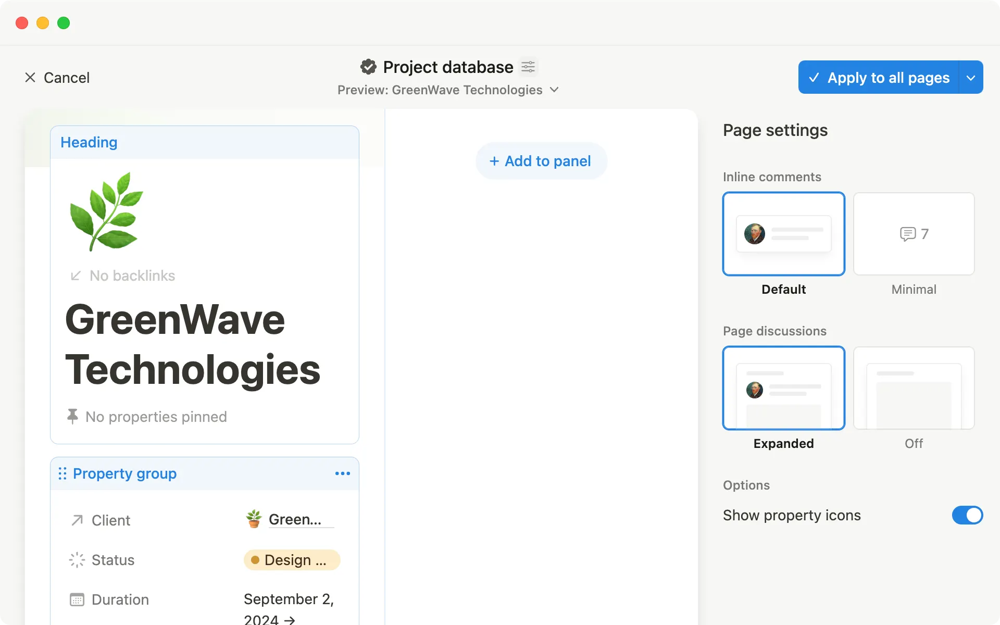
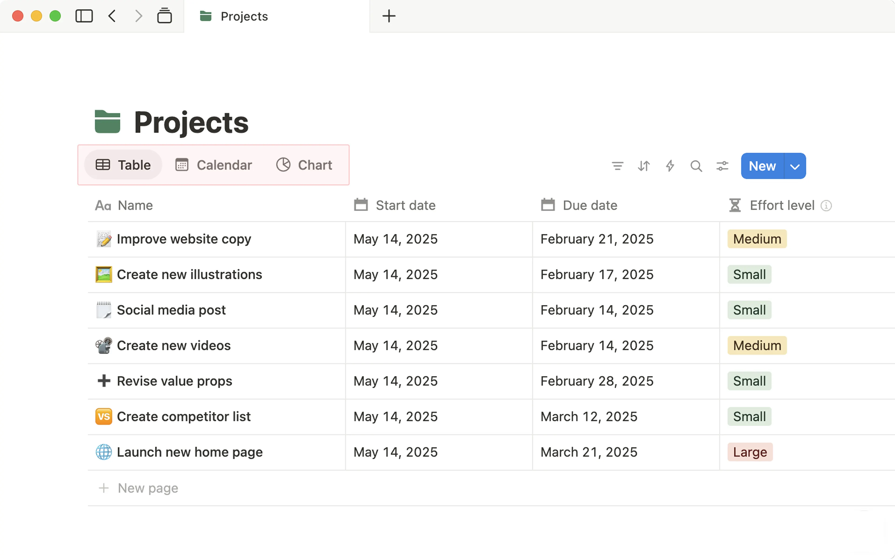
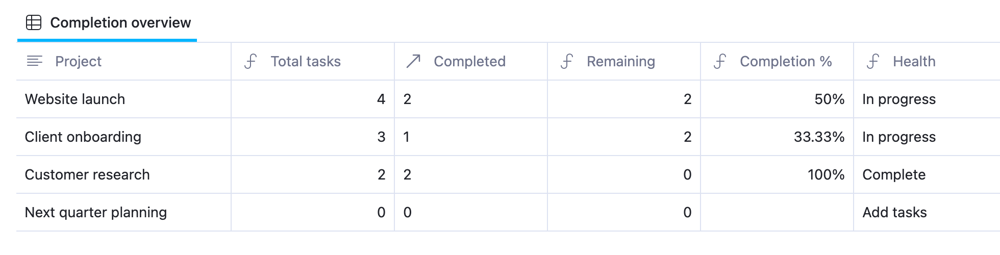
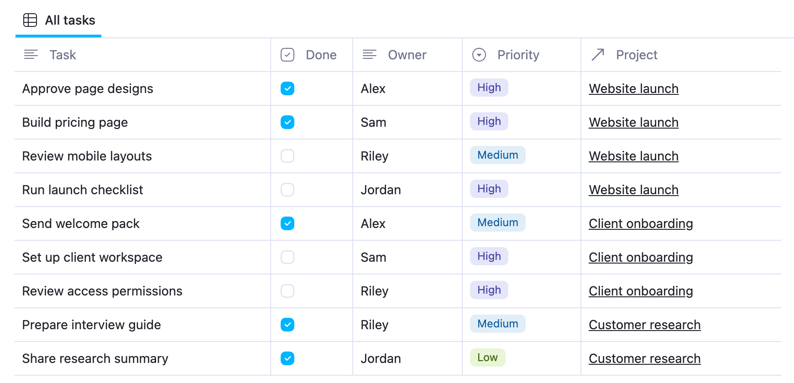
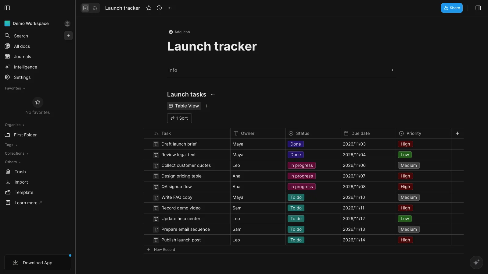
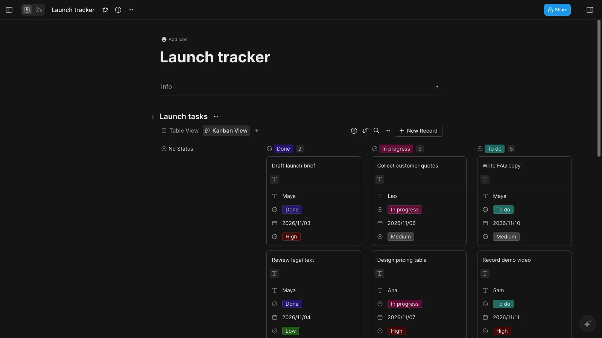
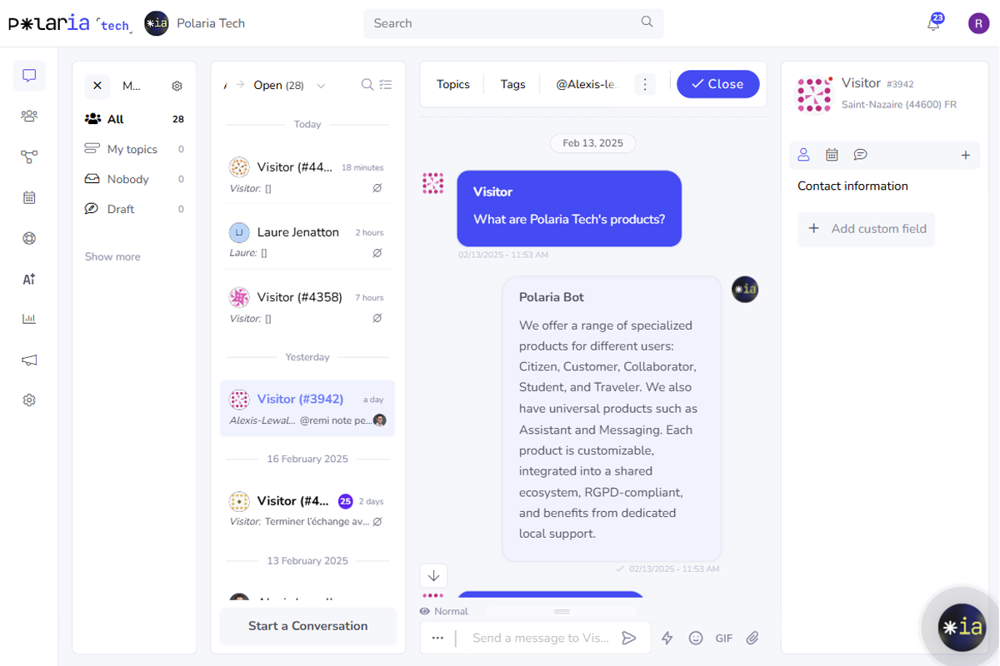

N01 · Capture éditeur publiée
1920 × 1310 pxNotion
Workspace natif Projects, navigation et cartes de projets
Viewport CSS inconnu

Huit images d’interfaces publiées par Notion, AppFlowy, AFFiNE et Polaria pour orienter un espace unique : pages, blocs, bases et preuves dans la même navigation.
Preuves documentaires, pas captures live. Images des éditeurs lues sur leurs URL publiques puis inspectées. Aucun compte concurrent utilisé et aucun contrôle UI repris après l’arrêt du navigateur. Le parcours mobile reste à éprouver dans le produit intégré.
Le père ouvre la page native de son chantier, écrit ses notes en blocs, retrouve ses actions et consulte les mises à jour proposées dans un panneau de preuves. L’outil ne lui demande pas de passer dans un second produit.
Sur téléphone, la liste mène à un document lisible en une colonne. La revue et la source s’ouvrent au premier plan avec un retour qui conserve la position du document. La table complète reste une vue de travail secondaire.
Workspace natif Projects, navigation et cartes de projets
Constructeur de disposition de page native, contenu et panneau

Vues enregistrées d’une même base native

Project Completion Tracker, base projets avec relations et résultats agrégés

Project Checklist Tasks, tâches reliées à la base projets

Document Launch tracker contenant une base en vue Table

Même base Launch tracker en vue Kanban groupée par état

Interface publiée sur le site actuel Polaria Tech ; dates visibles février 2025 ; quatre zones de gestion conversationnelle et contexte

Les critères précis et les états de conflit, couverture partielle, nouvelle source et conservation des notes humaines figurent dans le rapport associé. Ce document décrit une cible ; il ne présente pas la refonte comme déjà intégrée.
Images © éditeurs respectifs. Conservées avec attribution pour étude comparative privée ; aucune licence de réutilisation dans notre produit présumée. Les images n’attestent ni la conformité RGPD ni la disponibilité d’une API ou d’une fonctionnalité dans une version précise.